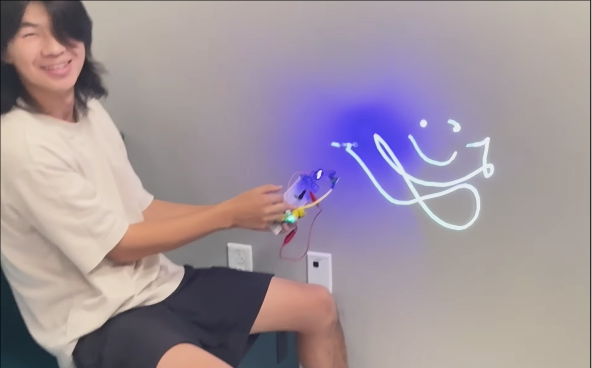
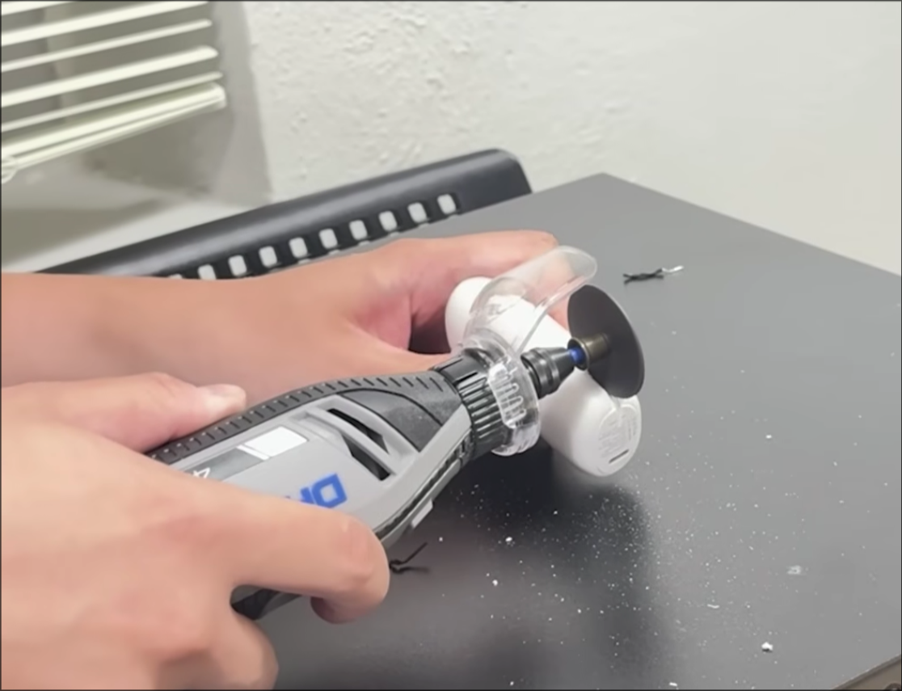
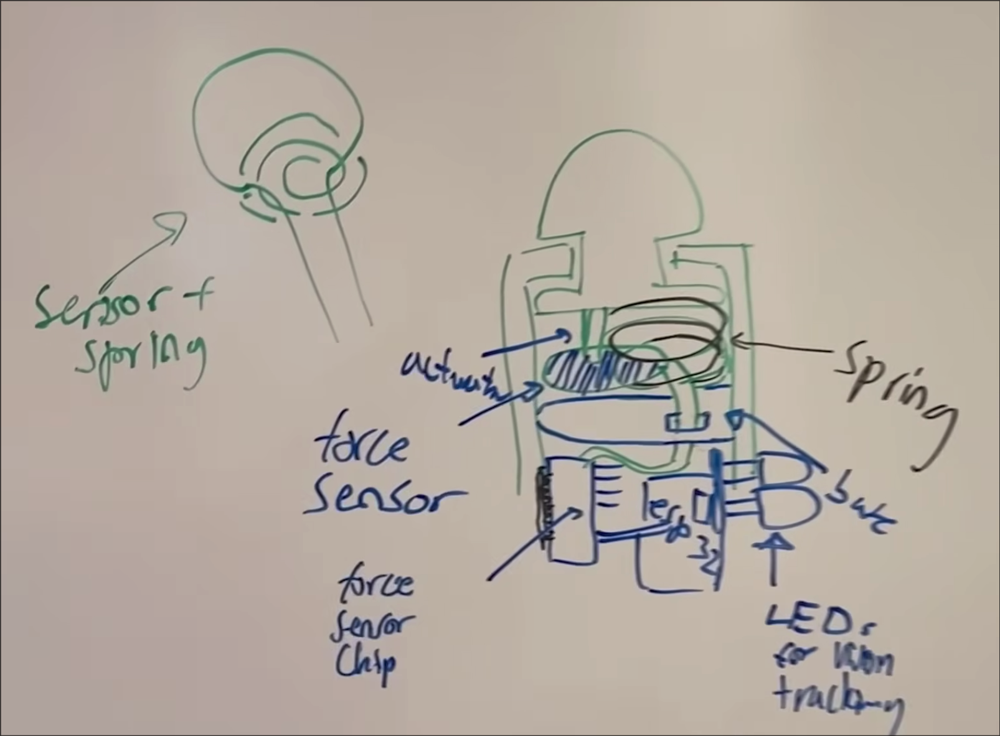
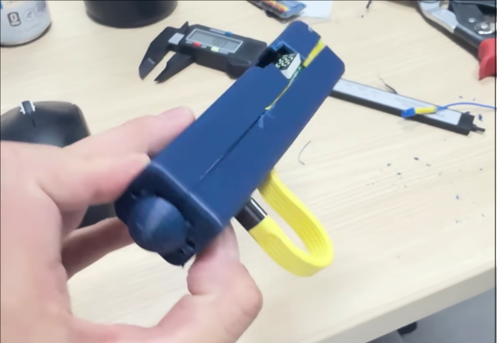
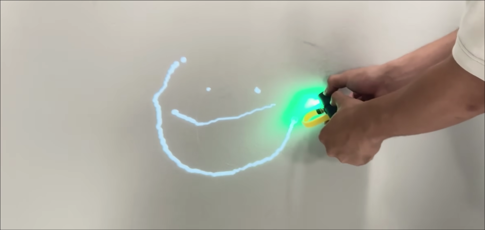

This project was a collaborative effort among Arya, Luke, Andrew, and me. We built the Wall Projector Pen during my first hackathon at HackTX 2025 (hosted by Freetail Hackers at UT Austin.) This 24 hour work sprint was one of the most fun and inspiring experiences of my life. I’m really proud of what we made.
The initial idea came from one of my own problems. I have a small whiteboard in my room I use for projects and studying, and I just wished it were larger. I wanted something that would let me use my wall as a whiteboard.
Then I thought of how teachers would sometimes project their tablets on walls in place of a whiteboard.
From there, it all clicked. For the hackathon we needed to present something useful, technically challenging, and flashy. A pen that could make any wall into an actual whiteboard and make markings appear out of thin air would satisfy all three of those requirements.
Here’s the details:
The project consisted of a Python app running on the user’s computer to prepare the projector output and a hardware device that collected data for the app.
The hardware device (the pen) is what I was mainly responsible for. I decided it would be built around a XIAO ESP32-S3 for its small form and because I’ve used it in the past. To detect the pen’s pressure, we used a wonderfully overpriced (around $200 omg) SingleTact 1N Force Sensor that we borrowed from a friend. The XIAO and the sensors communicate via I2C protocol and send data packets to the Python app through BLE protocol every 100ms. I wrote the firmware for the pen device and worked with Arya on the circuit. Later, we would add some lights to the pen, to assist the computer vision software in detecting the pen tip.

We didn’t bring batteries to the hackathon, and unfortunately, electronic hobbyist components are not common enough in Amazon warehouses to have same-day shipping. I browsed the Amazon catalogue and found a pretty silly solution: we could just buy a small phone power bank and repackage it. It even came with its own battery percentage display!

Luke worked on the mechanical design of the pen, and he somehow managed to fit all the electronics into a compact casing. We assembled the pen together and were able to run tests with the program the others created.


We ran into a few issues along the way:
1.) Silly of us to include a blue LED on the blue pen and set our computer vision to detect blue pixels. This caused inaccuracies with the software finding the actual pen tip because it would confuse the entire pen as the marked point. All we had to do was switch out the color of the LED.
2.) We would receive frequent bluetooth disconnections and took a pretty long time to realize that we haven’t plugged an antenna into the XIAO board.
3.) Our pen tip wasn’t integrated perfectly, the force sensor didn’t have consistent contact, so you’d have to press pretty hard to get a good line. We might have scratched the wall a little while doing initial tests of our project. Later, we would decide to not write directly on the wall and treat the pen like a “can of spray paint.” I also edited the Python app to average the pressure sensor data when the pen is not writing and search for outliers to determine if the pen is being pressed rather than just having a base threshold.
